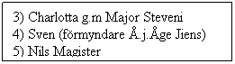

 |
Håslöv Nr. 15
1687 Åbo Sven Mattsson Brand på gården en av de bästa i häradet
1719 Åbo Kerstin Svensdotter - g.m. Olof Sonesson fr. Håslöv Nr.9
Barn 1) Matts 1719 g. m. T.E.enka på Ivö Hovgård 2) Elna 1722 g. m. fjärdingsman J.N. Ripa 3) Måns 1725 g. m. ”prästänkan”i Össjö dotter till prosten Ring Fjälkinge
Präst i Åhus,Össjö, Hjernarp( med hjälp av Nils Svensson ) Måns förvärvade en ansenlig förmögenhet, som kom hans släktingar till godo. Han köpte Håslöv Nr. 11 och 13 från Ljungby Nr. 17 från Ehrenborg Fjälkinge Nr. 9 från Maville
Trued Abrahamsson (släkt) (fr. Viby Nr.4, bror till Åke Nr.3)
4) Nils Åbo i Balsby, gift 2 ggr 5) Kersti g. m. Håkan Lasson Fjälkinge Nr. 23
6) ”Åbo” Nilla 1743-1811 g. m. Talemannen Riksdagsman Nils Svensson 1741-1814 (Bodde som änkling på Nr11) dotter Kiersten g. m. Direktören J. Pettersson Insp. på Karsholm
Arvskifte Barn 1) Carolina g.m Löjtn. Lindahl Nr. 11 (Auktion 1834) 2) Pehr g.m. Betty Nobel (byter namn till Elde) Nr. 13 (Hemmansklyvn.)
1857 Auktion Nr. 15 o 17 Ola Nilsson 1859 Avsöndring/Försäljning Dragontorpet Anders Nilsson Nr.16 1868 Nils Jönsson/ Hanna Göransdotter 1901 Hemmansklyvning Nr. 15 o 17 1902 Ägostyckning Nr.17 23 lotter (överlåtelse Göran Nilsson) 1903 Ägostyckning Nr.15 47 lotter 1904 1905 ? Återstående mark Mårten Svensson
1927 ? åkermark Listander Advokatbyrå äng delar Håkansson m.fl
1967 ? Avstyckningar tomter Gullringens Husförsäljnings AB
|
|
|
Till försidan |
||